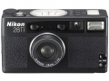
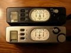

器材库 > 胶片袖珍相机（PS） > 28Ti

规格总览
发布日期
1994-09
产品类型
35mm自动对焦镜间快门相机
使用胶卷/胶片
35mm胶卷
画幅
24×36mm；全景模式：13×36mm
停产
是
镜头及对焦
镜头
28/2.8
镜头结构
6片/4组
对焦范围
0.4m至无限远
曝光控制
测光范围
2EV~17EV
曝光补偿
±2EV
快门
电子控制程序快门
快门速度
2 - 1/500秒
胶卷感光度
自动设置，ISO 25-5000（带DX编码）；ISO 100（非DX编码）
取景规格
取景范围
82%
取景放大倍率
0.35倍
取景器信息
快门速度，闪灯提示，曝光补偿
显示面板
拍摄日期，拍摄张数和电量不足
过片系统
过片
自动，每拍摄完一张后自动过卷一张
倒片
可中途退卷
胶卷计数
显示在模拟式指针显示器和LCD面板
闪光灯
内置闪光灯
有
闪光指数
8
闪光模式
自动闪光，防红眼式自动闪光，闪灯关闭，强制闪光
其它规格
自动日期
可选择年月日、月日年或日月年，时间显示为小时/分钟，24小时形式显示
电池
3V锂电池（CR123A 或 DL123A）
材质
钛合金外壳
颜色
黑色
尺寸
118×66×36mm
重量
315g
zhangzhikun2016-02-16 23:144.25 分
操作性 4.00功能性 4.50美观性 5.00趣味性 5.00耐用性 4.00性价比 3.00
sandb2011-10-15 14:524.75 分
操作性 4.50功能性 4.50美观性 5.00趣味性 5.00耐用性 5.00性价比 4.50
changjiang2006-12-27 22:552.83 分
操作性 4.50功能性 3.50美观性 3.00趣味性 2.00耐用性 3.50性价比 0.50
南瓜2005-09-14 22:594.92 分
操作性 5.00功能性 5.00美观性 5.00趣味性 5.00耐用性 5.00性价比 4.50

kkg2005-01-14 14:084.58 分
操作性 5.00功能性 5.00美观性 5.00趣味性 5.00耐用性 4.50性价比 3.00
张振宁2003-09-02 11:334.83 分
操作性 5.00功能性 5.00美观性 5.00趣味性 5.00耐用性 5.00性价比 4.00
自由射手2003-06-15 03:104.58 分
操作性 4.50功能性 4.50美观性 5.00趣味性 5.00耐用性 4.50性价比 4.00
产品图 / 样片
尼康 28Ti
评测 / 相关文章
该产品暂无存档的评测文章